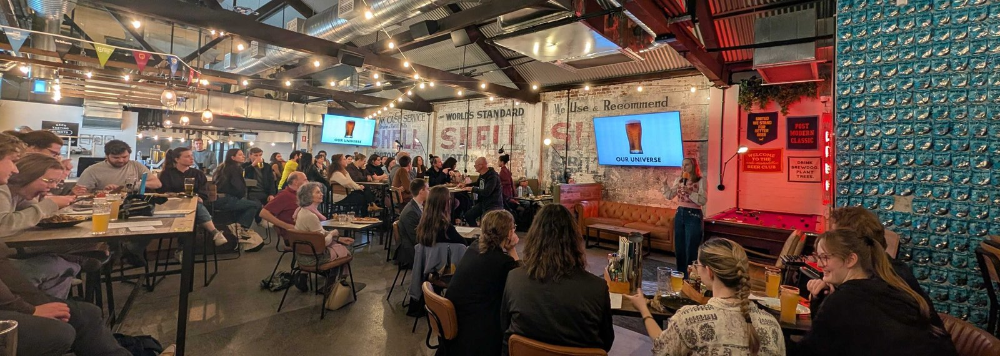
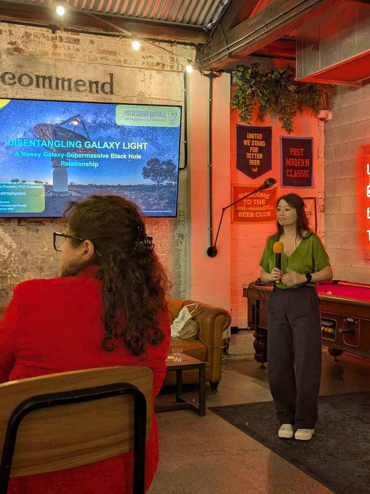
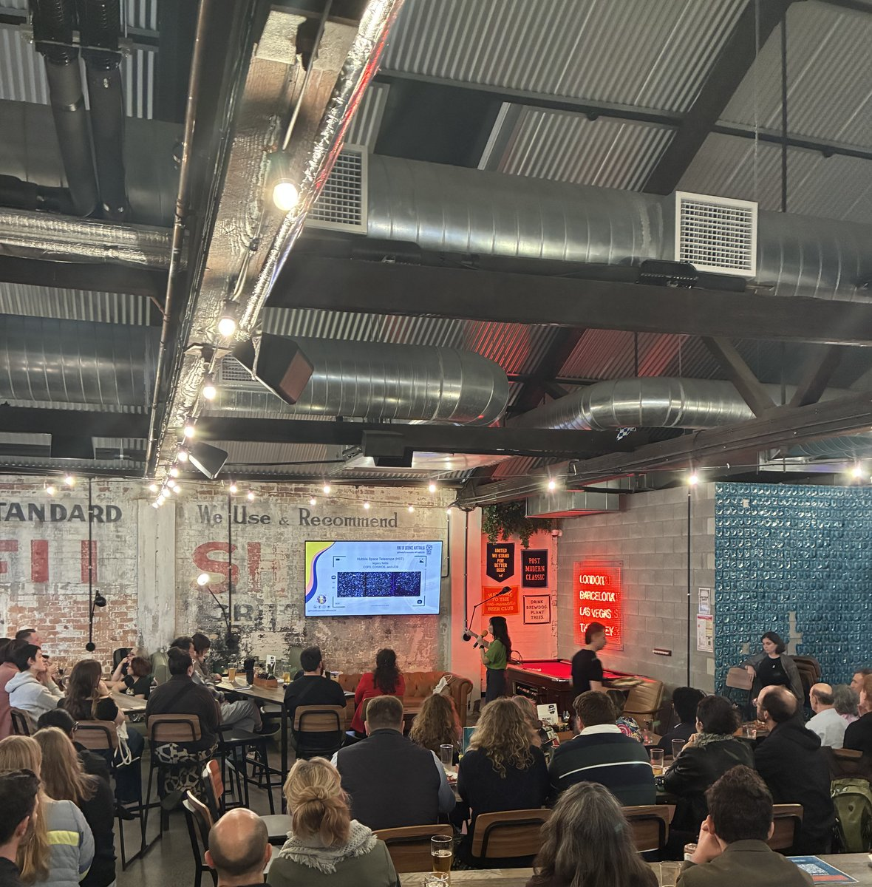
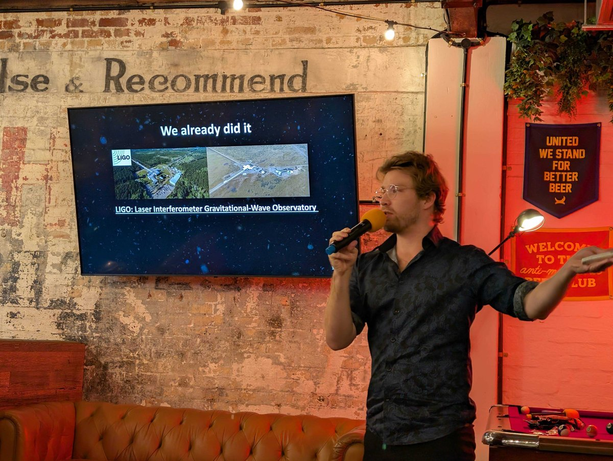
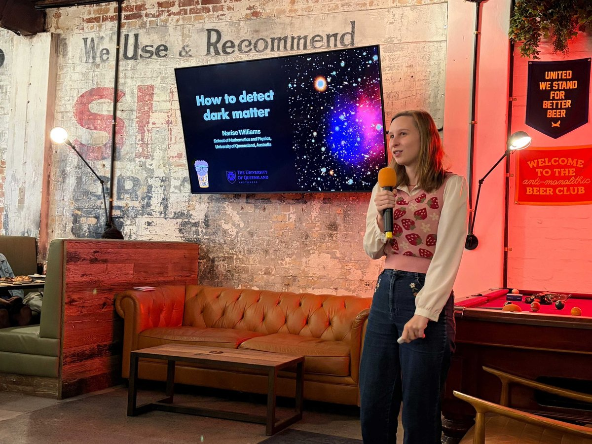

Outreach
18–20 May 2026 · BrewDog Fortitude Valley, Brisbane
QUASAR researchers light up Pint of Science 2026
Over three evenings from 18 to 20 May, four QUASAR researchers stepped out of the lab and onto the stage at BrewDog Fortitude Valley on Brunswick Street, and Brisbane turned out in force. Turnout was excellent every night: packed rooms, sharp questions, and pints in hand, as cosmic distance, supermassive black holes, gravitational waves, and dark matter were brought to a pub audience.
Pint of Science is an international festival that brings researchers into local pubs to share their latest work in plain language. The 2026 Brisbane edition ran across three themed evenings at BrewDog Fortitude Valley, and QUASAR had a speaker on every one of them.
Researchers from UQ and QUT carried some of astrophysics’ biggest open questions into one of the most welcoming venues imaginable: a crowded pub where anyone could pull up a chair and listen. The result was three nights of science that felt less like a lecture series and more like the best kind of conversation.

The QUASAR speakers
Each evening formed part of the Brisbane Pint of Science programme, with a different theme and a full line-up of talks at BrewDog.
Monday 18 May · At the Edge of Science
Caitlin Ross (University of Queensland)
“What to do when you can’t find a big enough ruler?”
Caitlin opened the week on the At the Edge of Science evening with a talk on how astronomers measure distance across the cosmos. She explained why the Universe offers no simple measuring tape, and how researchers use light, motion, and geometry to map scales from the nearby to the far reaches of space.
Tuesday 19 May · Big Power from Galaxies to Quantum Tech

Vanessa Porchet (Queensland University of Technology)
“Disentangling Galaxy Light: A Messy Galaxy–Supermassive Black Hole Relationship”
On the Big Power from Galaxies to Quantum Tech evening, Vanessa explored how galaxies and the supermassive black holes at their centres are linked, and why untangling that relationship is such a challenge for astronomers. Her talk showed how multiwavelength observations help separate the signatures of black-hole activity from the light of stars forming across cosmic time.

Wednesday 20 May · Signals from the Extreme

Hugh McDougall (University of Queensland)
“Extragalactic Black Holes: Echoes and Ripples to Hear the Age of the Universe”
Hugh spoke on the Signals from the Extreme evening, starting with the fundamentals of black holes: what they are, why they matter, and the different ways astronomers detect them, from light across the electromagnetic spectrum to the ripples of gravitational waves. His talk gave the audience a clear picture of how researchers study these objects across the Universe.

Narise Williams (University of Queensland)
“How to directly detect dark matter”
Narise closed QUASAR’s run on the same evening with a talk on the search for dark matter. She explained why this invisible form of matter is thought to dominate the cosmos, why it has never been directly detected, and how experiments around the world, using a range of techniques, are working to change that.
Science in the pub, done properly
Public engagement is part of how QUASAR does science in Queensland. Caitlin, Vanessa, Hugh, and Narise gave the collaboration a strong showing across all three Brisbane evenings, with excellent turnout at every talk. They showed that serious research belongs in the community as much as in the seminar room.
We are proud of Caitlin, Vanessa, Hugh, and Narise for representing QUASAR at Pint of Science 2026, and grateful to everyone who came along and filled BrewDog on 18, 19, and 20 May. If you missed it this year, keep an eye on the Pint of Science Australia programme and on QUASAR for the next round.